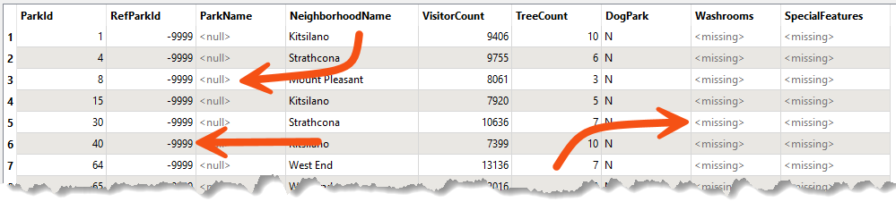

Learning Objectives
After completing this lesson, you’ll be able to:
- Identify several different definitions for "nothing" in data.
- Identify missing, empty, and null data in FME.
What is a Null Value?
Null values are an essential part of FME’s attribute handling. Not every dataset has null values, and not every format supports them, but when they do exist, it is crucial for FME to handle them correctly.
In general, a null attribute value is the equivalent of nothing. However, it’s essential to be precise in our terminology because there are many ways to represent nothing, for example:
- An attribute has a particular state that indicates nothingness (null)
- An attribute has a particular value that indicates nothingness (for example, -999)
- An attribute exists but has no value (empty)
- An attribute doesn’t exist (missing)
- A numeric attribute is NaN (Not a Number)
- A numeric attribute has a value of zero
- A raster cell is set to nodata (which is essentially the raster equivalent of null)
Safe Software’s developers identified fifteen (15) ways to represent “nothing” in spatial and tabular data!
So, when we talk about null, it has a particular meaning. For us, null is a state deliberately set to signify that the information does not exist. It tells us that the lack of information is not a mistake, as a missing or empty value might be.
Because there are so many different methods, this section will discuss ways to handle "nothing" attribute values, but with a particular emphasis on null values.

FME's three main definitions are null, empty, and missing. To clarify with an analogy, consider your house's kitchen.
Suppose there is no sink, no place to put it, and no plumbing for it. The builder foolishly decided there would be no sink, so the sink was missing.
If there was a place for the sink and plumbing for the sink, but the sink was not there, then it would be null. The builder set aside space for the sink but still needs to add it.
If there is a sink but no water in it, then the sink exists but is empty.
How Does FME Represent Nothing?
FME’s internal engine has a state that represents null. However, when presented to the user, a null value is usually represented as <null>.
For example, this feature in the Logger has <null> for the ParkName attribute:

Similarly, the FME Data Inspector will depict nulls as <null>:

Notice how we have a wide range of "nothing" values here. The ParkName is a true <null>, the RefParkId has a value of -9999, and Washrooms is <missing> (meaning the entire attribute doesn't exist).
<missing> is an interesting concept. You might ask, "How do we know when an attribute is missing?" However, a better question is, "How do we know that the attribute should exist?"
Using our previous analogy, we know the kitchen sink is missing because the house blueprints specified a sink. The sink should be there, but it isn't.
In FME, we know an attribute should exist because it appears in the reader schema. For example, in the above screenshot, the Washrooms attribute appears in the schema, but certain features do not have that attribute for some reason. That makes the attribute <missing> from those features.